응용지질기사 (2006-08-06 기출문제)
1과목: 암석학 및 광물학
1. 다음 중 형석이 속하는 결정계는?
- 정방정계
- 사방정계
- 등축정계
- 육방정계
(정답률: 알수없음)

2. 광물 결정 내에 생성된 피션트랙은 다음 중 어느 것에 기인되는가?
- 미세한 벽개면의 연속
- 단구의 생성에 수반된 자국
- 방사성 원소의 붕괴
- 불순물의 용리
(정답률: 알수없음)
3. 다음 광물 중 층간수를 함유하는 것은?
- 정장석
- 몬모릴로나이트
- 적철석
- 흑연
(정답률: 72%)
4. 결정면의 성장에 대한 이론 중 나선상 성장이론에 대한 설명으로 맞는 것은?
- 이온결정에서만 적용된다.
- 용액의 과포화도가 낮은 상태에서만 결정이 성장된다.
- 성장속도가 느린 환경에서 잘 적용된다.
- 변위를 수반하지 않는 결정성장이다.
(정답률: 70%)
5. 다음 광물의 물리적 성질 중 빛에 의한 성질이 아닌 것은?
- 조흔색
- 요변성
- 투명도
- 발광성
(정답률: 36%)
6. 물을 이루는 산소와 수소의 원자들이 이루는 화학적 결합의 종류는 어떤 것인가?
- 금속결합
- 공유결합
- 잔류결합
- 이온결합
(정답률: 77%)
7. 원자와 이온의 크기(반경)에 관한 설명으로 틀린 것은?
- 같은족에서는 원자번호가 클수록 일반적으로 이온의 반경도 커진다.
- 같은 원자라도 양이온의 전하가 커지면 반경이 작아진다.
- 란탄족 원소들 중 3가 이온들은 원자번호가 커질수록 반경이 작아진다.
- 배위수가 커질수록 반경은 작아진다.
(정답률: 50%)
8. 규산염 광물은 기본 구조단위인 SiO4 사면체의 결합 방식에 따라 구분한다. 아래 그림은 사면체가 한 꼭지점 산소를 공유하면서 한 방향으로 연결된 사슬구조를 이룬다. 이를 이노규산염 광물 또는 단쇄형 광물이라 하며, 휘석이 그 예 이다. 이때 Si : O의 비는 얼마인가?
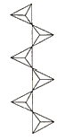
- 1 : 2
- 1 : 3
- 1 : 3.5
- 1 : 4
(정답률: 73%)
9. 다음 중 물질의 첨가와 제거가 동시에 일어나면서 광물이 생성되는 교대작용은?
- CaCO3 + SiO2 → CaSiO3 + CO2
- CaCO3 + Fe2+ → FeCO3 + Ca2+
- CaCO3 + Mg2+ + CO32- → CaMg(CO3)2
- CaCO3 + Zn2+ + s2- → ZnS + Ca2+ + CO2 + 1/2O2
(정답률: 64%)
10. 광학적으로 등방성과 관계없는 것은?
- 광물내부의 어느 방향으로도 빛의 통과 속도가 일정하다.
- 광물내부의 어느 방향으로도 빛의 굴절율이 일정하다.
- 등방성 광물은 복굴절 광물로서 빛의 두 방향으로 굴절한다.
- 일반적으로 유리나 물 같은 비정질 물질은 광학적으로 등방성을 갖는다.
(정답률: 알수없음)
11. 광역 변성작용에서 압력과 온도를 지시해주는데 중요한 역할을 하는 다음의 변성광물 안정곡선과 관계없는 광물은?
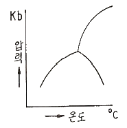
- 남정석
- 근청석
- 규선석
- 홍주석
(정답률: 54%)
12. 안산암에 대한 다음 설명 중 틀린 것은?
- 화산암에 속한다.
- 알칼리 장석이 주성분 광물이다.
- 유색광물은 주로 흑운모와 각섬석이다.
- 섬록암과 비슷한 화학성분으로 구성되 어 있다.
(정답률: 67%)
13. 쇄설성 퇴적물의 크기가 1/16~2㎜ 인 것은?
- 잔자갈(pebble)
- 왕모래(granule)
- 모래(sand)
- 실트(silt)
(정답률: 50%)
14. 저반으로 산출되는 화성암체에서 흔히 관찰되는 조직이 아닌 것은?
- 비정질조직
- 완정질조직
- 등립질조직
- 조립질조직
(정답률: 64%)
15. 고철질(염기성)의 화성암이 휘석 혼펠스상의 접촉변성을 받아 생성되는 광물조합에 포함될 수 없는 것은?
- 사방휘석
- 단사휘석
- 사장석
- 녹염석
(정답률: 알수없음)
16. 다음 중 퇴적암의 지층중에 평행으로 관입하여 들어간 화성암체의 일부가 더 두꺼워져 렌즈나 만두모양으로 부풀어 오른 모양을 하고 있는 것은?
- 병반
- 암맥
- 저반
- 암주
(정답률: 알수없음)
17. 수분을 4% 이하 포함한 유리질 화산암으로 성분은 유문암과 비슷한 것이 대부분이며 파면이 조개모양인 것은?
- 송지암
- 진주암
- 부석
- 분석
(정답률: 알수없음)
18. 사암의 쇄설성 퇴적물의 구조 성숙도는 분급도와 원마도에 의하여 결정되어진다. 다음 중 퇴적물의 성속도가 가장 큰 것은?
- 원마도가 높고 분급도가 양호한 것
- 원마도가 낮고 분급도가 양호한 것
- 원마도가 높고 분급도가 불량한 것
- 원마도가 낮고 분급도가 불량한 것
(정답률: 50%)
19. 다음 변성구조 중 광역변성작용의 변성도가 높아 유색광물과 무색광물이 교대로 배열되어 호상구조를 보여주는 것은?
- 선구조
- 압쇄구조
- 유동구조
- 편마구조
(정답률: 60%)
20. 다음 중 가장 저온・저압의 변성상은?
- 제올라이트상(zeolite facies)
- 에클로자이트상(eclogite facies)
- 녹색편마암 (greenschist facies)
- 각섬암상 (amphibolite facies)
(정답률: 67%)
2과목: 구조지질학
21. 다음 도면에서 향사형 배사(Synform anticline)에 해당하는 부분은 어디인가?
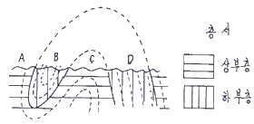
- A
- B
- C
- D
(정답률: 86%)
22. 확정운동이 우세한 지역에서는 일반적으로 분지가 만들어진다. 다음 중 주향이동단층(strike-slip fault)과 관련되어 많이 만들어지는 분지의 형태는?
- 배호 분지(back arc basin)
- 전지형 분지(foreland basin)
- 당겨열림형 분지(pull-apart basin)
- 반지구형 분지(half-graben basin)
(정답률: 알수없음)
23. 습곡구조에서 버어전스(vergenec)란 다음 중 무엇을 가르키는 것인가?
- 습곡의 힌지(Hinge)
- 비대칭 습곡의 역전방향
- 습곡축면의 경사방향
- 습곡의 파장
(정답률: 39%)
24. 다음 중 하각작용(down cutting)에 해당하지 않는 것은?
- 뜯어내기 작용
- 마식작용
- 용해작용
- 포행작용
(정답률: 알수없음)
25. 다음 중 멜란지(melange)의 형성 지역으로 알맞은 곳은?
- 해구
- 해령
- 변환단층
- 화산
(정답률: 알수없음)
26. 지질시대를 구분하는데 가장 중요하게 취급되는 지질구조는?
- 단층
- 부정합
- 습곡구조
- 절리
(정답률: 90%)
27. 다음 그림은 어느 탄광의 지질 단면도이다. 다음 중 어는 습곡과 관계가 있는가?
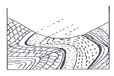
- 경사습곡(Inclined fold)
- 침강습곡(Plunging fold)
- 수직습곡(Vertical fold)
- 향심습곡(Centroclinal fold)
(정답률: 70%)
28. 지구내부의 구조를 알기 위해서 지진파를 주로 사용한다. 이는 지진파의 어떠한 성질을 주로 이용한 것인가?
- 화학성분에 따른 투과도 변화
- 응력에 따른 가속도 변화
- 밀도에 따른 속도 변화
- 암종에 따른 대자율 변화
(정답률: 알수없음)
29. 우리나라의 추가령 열곡 같은 구조는 다음 중 어디에 가장 가까운가?
- 협곡(Canyon)
- 단층곡(Fault valley)
- 메사(Mesa)
- 뷰트(butte)
(정답률: 62%)
30. 다음 중 빙하지형에 해당하는 용어가 아닌 것은?
- moraine
- fiord
- Aréte
- breccia
(정답률: 54%)
31. 다음 중 지진과 가장 관련이 없는 것은?
- 연성변형(ductile deformation)
- 취성변형(brittle deformation)
- 단층작용(faulting)
- 탄성에너지(elastic energy)
(정답률: 알수없음)
32. 다음 지질도에서 A-B선에 따라 단면도(斷面圖)를 작성하려 한다. X지점의 위경사(僞經斜, apparent dip)는?
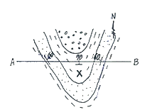
- 수직
- 70°N
- 60°NE
- 수평
(정답률: 알수없음)
33. 건조한 지역에서 가장 특징적인 지형으로서 기반암이 침식된 평활한 완경사면으로서 얇게 또는 불연속적으로 충적토가 덮여있는 지역은?
- 인젤베르크
- 페디먼트
- 바하다
- 플라야
(정답률: 47%)
34. 하천의 발달 형태가 직선 또는 직각을 이루고 있는 부분이 있다. 이는 다음 중 어느 것의 영향을 받아 형성된 것일까?
- 돔(dome)구조
- 저반(batholith)
- 주향이동단층(strike-slip fault)
- 화산함몰체(cauldron)
(정답률: 92%)
35. 우리나라의 동해와 일본 열도를 둘러싼 태평양판과 유라시아판 사이의 경계부는 판구조론적(plate tectonics) 관점에서 어떤 경계에 속하는가?
- 대륙지각과 대륙지각의 충돌경계
- 대륙지각과 해양지각의 섭입경계
- 해양지각과 해양지각의 확장경계
- 대륙지각과 해양지각의 변환단층경계
(정답률: 알수없음)
36. 다음 중 맨틀에 가장 풍부하게 존재하는 광물은?
- 석영
- 운모류
- 감람석
- 장석류
(정답률: 알수없음)
37. 다음 중 정단층 운동에 수반되어 나타나는 특징적인 구조로 보기 어려운 것은?
- 꽃구조(flower structure)
- 성장단층(growth fault)
- 지루와 지구(horst and graben)
- 회전 배사구조(roll-over anticline)
(정답률: 알수없음)
38. 다음 중 동해는 어느 것에 해당되는가?
- 호상열도(Island arc)
- 전호분지(Fore-arc basin)
- 전호해령(Fore-arc ridge)
- 배호분지(Back arc basin)
(정답률: 알수없음)
39. 어느 지역의 지질조사를 실시하는 중에 두 지층 사이의 부정합 관계를 알아내려고 한다. 다음 조사사항 중 가장 부적합한 것은?
- 두 지층 사이에서 기저역암을 찾으려고 한다.
- 두 지층의 주향과 경사를 면밀히 측 하여 비교한다.
- 두 지층속에 들어있는 화석을 조사하여 비교한다.
- 두 지층을 구성하는 입자의 크기를 분석하여 비교한다.
(정답률: 86%)
40. 지형 발달 과정에서 원지형(原地形)이 거의 소멸되었으며, 서로 이웃에 있는 골짜기나 유역 사이의 분수령이 둥글게 되어 서서히 고도를 낮추는 단계는?
- 유년기
- 장년기
- 노년기
- 준평원기
(정답률: 80%)
3과목: 탐사공학
41. 수평 2층 지하구조에서 상층의 밀도와 탄성파 속도가 2g/cm3, 1500m/sec, 하층의 밀도와 탄성파 속도가 2.7g/cm3, 4000m/sec일 때 탄성파 반사계수는?
- 1.565
- 1.253
- 0.565
- 0.253
(정답률: 알수없음)
42. 다음 중 지자기에 대한 설명으로 옳지 않는 것은?
- 지자기의 3요소는 지자기장의 크기인 총자기, 지자기장의 수평성분과 진북사이의 각인 편각, 지자기장의 수평성분과 총자기 사이각인 복각을 말한다.
- 지자기 이상의 원인은 코어와 맨틀의 경계부에서의 유체의 와동에 의한 것이다.
- 지자기 일변화의 원인은 태양과 달의 영향에 의한 외적요인과 양도체인 맨틀이나 코어내에 발생하는 유도전류에 의한 내적요인이 있다.
- 지자기의 생성은 맨틀과 외핵 그리고 내핵 사이에 일어나는 열 대류현상과 관련이 없다.
(정답률: 알수없음)
43. 핵자력계에 대한 설명으로 틀린 것은?
- 자기공명현상을 이용하여 총자기를 측정하는 자력계이다.
- 비교적 정밀도가 높고 측정방향에 관계 없이 사용이 가능하다.
- 1초 이하의 간격으로 정밀 측정이 가능하다.
- 센서가 다소 흔들려도 영향을 받지 않아 항공탐사에 사용된다.
(정답률: 60%)
44. 같은 암석일지라도 지질학적 조건에 따라서 암석이나 퇴적물에서의 탄성파의 속도가 달라지지만 몇 가지의 대략적인 법칙이 성립한다. 다음 중 틀린 것은?
- 불포화된 퇴적물은 포화된 퇴적물보다 속도가 느리다.
- 미고결 퇴적물은 고결 퇴적물보다 속도가 느리다.
- 파쇄되지 않은 암석은 파쇄된 암석보다 속도가 느리다.
- 풍화된 암석은 풍화되지 않은 암석보다 속도가 느리다.
(정답률: 67%)
45. 굴절법 탐사방법이 개발된 초기에 유전 지역에서 심도가 얕은 암염돔(salt dome)을 조사하는데 매우 유용하게 사용되었으며, 짧은 시간 내에 비교정 광범위한 지역을 손쉽게 조사할 수 있기 때문에 새로운 지역에 대한 예비 탐사에도 효과적으로 이용되는 탐사 방법은???
- 팬터밍(phantoming)
- 인라인(in-line) 탐사법
- 측선발파법(profile shooting)
- 선형발파법(fan-shooting)
(정답률: 알수없음)
46. 전자탐사에서 사용주파수(f)와 침토심도(d)와의 관계를 올바르게 나타낸 것은?（단, ∝ 는 비례한다는 표시임.)
- d ∝ f2
- d ∝ f
- d ∝ (1/√f)
- d ∝ (1/f)
(정답률: 알수없음)
47. 업 워어드 콘티뉴에이션(upward continuation)이란 다음 탐사 방법 중 어느 탐사 결과의 해석에서 사용되는 용어인가?
- 방사능탐사
- 지화학탐사
- 중력탐사
- 탄성파탐사
(정답률: 46%)
48. 다음 전자탐사법 중 송신원이 없는 탐사법은?
- 소형 루프법
- 시간영역 전자탐사법(TEM)
- MT법
- 항공 전자탐사법(INPUT 시스템)
(정답률: 60%)
49. 전기비정항이 낮은 평탄한 지역에서 지표 전기비정항 탐사를 수행할 경우 나타나는 현상과 그 대처 방안을 바르게 설명한 것은?
- 측정값이 매우 커지므로 전극 간격을 넓게 하는 것이 유리하다.
- 측정값이 매우 작으므로 가능한 신호대 잡음비가 높은 전극배열을 사용한다.
- 측정값이 음의 값을 보일 경우 절대값을 취하여 해석에 사용한다.
- 측정값이 0에 가까운 경우는 측정 장비의 고장이므로 수리해야한다.
(정답률: 알수없음)
50. 배나 항공기를 이용하여 중력탐사를 할 때 빠른 속도 때문에 발생되는 지구 자체의 원심 가속도 변화로 인한 중력의 변화를 보정하는 것은?
- 계기 보정
- 지형 보정
- 부게 보정
- 에트뵈스 보정
(정답률: 82%)
51. 전기비저항 탐사에 사용되는 전극배열 중 가장 분해능이 뛰어나며, 수평 및 수직 방향의 전기비저항 변화를 파악하는데 매우 유용한 전극배열은 무엇인가?
- 웨너 배열
- 슐럼버저 배열
- 단극 배열
- 쌍극자 배열
(정답률: 74%)
52. 다음의 탄성파 탐사자료 처리과정 중 파의 분해능(resolution)을 높이는데 가장 효과적인 방법은?
- 뮤팅(muting)
- 디콘볼루션(deconvolution)
- 속도여과(velocity filtering)
- 정상보정(static corretion)
(정답률: 46%)
53. 다음 중력 이상 중 측정 중력치에 대하여 위도보정과 고도보정을 실시한 후, 이로부터 기준접에서의 표준중력값을 뺀 값을 무엇이라도 하는가?
- 지각평형 이상
- 단순부게 이상
- 후리-에어 이상
- 부게 이상
(정답률: 62%)
54. 다음 중 일반적인 금광상의 지시원소(pathfinder)는?
- Nb
- Ti
- As
- U
(정답률: 알수없음)
55. 지구화학적 환경의 분류 중에서 1차 환경의 특징이 아닌 것은?
- 화성활동이나 변성 작용이 일어나는 지하 심부의 환경이다.
- 일반적으로 온도와 압력이 높다.
- 산소의 함량이 적다.
- 유체의 이동이 비교적 활발하다.
(정답률: 알수없음)
56. 다음 중 방사능 탐사에서 주로 이용되는 암석 내의 방사능 물질이 아닌 것은?
- K40
- Th
- U
- Ti
(정답률: 알수없음)
57. 다음 중 동위원소 및 방사능 탐사에 대한 설명으로 바르지 않은 것은?
- 방사능의 측정단위로는 큐리가 사용되며, γ(gamma)선은 X선의 측정단위인 렌트겐을 이용한다.
- 방사능 붕괴시 α, β입자를 방출 하더라도 모원소의 원자번호 변화는 없다.
- 방사능 탐사에서는 주로 γ(gamma)선을 이용한다.
- 자연방사능 원소에는 크게 네 개의 방사능계열이 있는데 U, Th로 시작하는 계열이 방사능 탐사에서 중요하다.
(정답률: 알수없음)
58. 다음 중 탄성파의 특성에 대한 설명 중 맞지 않는 것은?
- 종(P)파는 입자의 진동과 파동의 전파 방향이 서로 평행하다.
- 레일리파는 입자의 진동과 파동의 전파 방향이 같은 방향으로 운동한다.
- 스톤리(Stoneley)파는 고체와 액체의 경계면에서 발생한다.
- 횡(S)파는 파동의 운동방향에 따라 SV파와 SH파가 있다.
(정답률: 알수없음)
59. 다음 중 방사능 탐사에서 가장 많이 사용하는 기기는?
- 그레비미터(gravimeter)
- 신틸레이션 미터(scintillation meter)
- 크라우드 챔버(cloud chamber)
- 알파컵(α-cup)
(정답률: 80%)
60. 1층 및 2층의 탄성파 속도가 각각 500, 1000 m/s인 수평 2층 구조에서 탄성파음원으로부터 50m 떨어진 점에 반사파가 도착되는 시간은? (단, 1층의 심도는 10m이다.)
- 0.⑤초
- 0.11초
- 0.25초
- 0.35초
(정답률: 알수없음)
4과목: 지질공학
61. 어떤 모래층의 표준관입시험에 의한 N값 측정결과 N=5가 되었다면 이 모래층의 상태는?
- 대단히 느슨한 상태
- 느슨한 상태
- 중간 상태
- 조밀한 상태
(정답률: 알수없음)
62. Q-System을 이용하여 암반분류를 실시한 결과 Q값이 2.718로 결정되었다. 이 값을 이용하여 추정할 수 있는 RMR값은 얼마? (단, Bieniawski(1976)제안식을 사용할 것)
- 44
- 47
- 50
- 53
(정답률: 46%)
63. 가는 모래에 대하여 정수위투수시험을 하여 다음과 같은 결과를 얻었다면 투수속도는 얼마나 되겠는가? (단,시료길이 : 24cm, 시료의 단면적 : 706cm2, 수두차 : 48cm, 투수량 : 3100cm3, 시간 : 30초)
- 0.146cm/s
- 0.762cm/s
- 1.176 cm/s
- 1.488cm/s
(정답률: 알수없음)
64. 피압대수층에 대한 설명으로 틀린 것은?
- 포화대의 상.하부가 불투수층으로 피복되어 심한 압력을 받는 구속상태하에 있다.
- 자분정은 피압지하수위가 지표면보다 낮을때 발생한다.
- 장기간 이루어지는 채수에 의해 자유면 대수층으로 변환될 수도 있다.
- 지표면에 노출된 구간은 피압대수층의 함양지역이 되며, 자유면 상태 하에 있다.
(정답률: 알수없음)
65. 포화대의 저유특성을 결정하는 요인이 아닌것은?
- 수리전도도
- 공극율
- 비저유계수
- 비산출율
(정답률: 알수없음)
66. 통일분류법에 의한 흙의 공학적 분류기호 중 GW의 대표명으로 옳은 것은?
- 무기질 실트 및 극세사, 암분 실트질의 세사
- 입도분포가 양호한 모래 또는 자갈섞인 모래
- 입도분포가 양호한 자갈 또는 자갈-모래 혼합토
- 소성이 낮은 유기질 실트 및 유기질 점토
(정답률: 알수없음)
67. 온대지방에서 장석이 화학적 풍화를 받게 되면 안정한 2차 광물을 생성한다. 다음 중 어느 것인가?
- 중사
- 보옥사이트
- 석고
- 고령토
(정답률: 알수없음)
68. 암석의 인장강도를 추정하기 위해 수행하는 압열인장시험에서 인장강도를 구하는 식은? (단, σt : 인장강도, P : 시편에 작용시킨 하중, D : 시편의 직경, r : 시편의 반경, l : 시편의 길이)
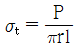
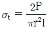
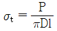
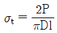
(정답률: 알수없음)
69. 원위치에서 지반의 강약, 다져짐 정도, 토층구성을 파악하기 위해 실시하는 시험으로, 질량 63.5∓0,5kg의 해머를 76∓1cm 높이에서 자유낙하시켜 선단의 샘플러를 지중에 관입하는 시험법은?
- 콘 관입시험
- 베인 전단시험
- 표준 관입시험
- 평판 재하시험
(정답률: 64%)
70. 지하수로 포화된 느슨한 모래지반이 지진에 의한 진동과 충격을 받으면 다짐작용으로 과포화 상태에 도달하게 되어 액체와 같은상태로 변하게 되는데 이러한 현상을 액상화현상 이라고한다. 다음 중 액상화 현상을 방지하는 방법으로 틀린 것은?
- 배수를 하여 지하수위를 낮춘다.
- 느슨한 모래층을 다진다.
- 시멘트 등을 이용하여 모래를 고결시킨다.
- 자연간극비를 한계간극비보다 더 크게 한다.
(정답률: 67%)
71. 시험구간길이는 2m, 주입된물의 양은 10l/min, 유효주입압력은 5kg/cm2인 조건으로 루전시험을 실시하였다. 루전치(Lugeon)는 얼마인가?
- 5
- 10
- 15
- 20
(정답률: 84%)
72. 흙의 일축압축시험에서 압축강도가 2.5kg/cm2일때 파괴면이 수평면과 이루는 각도는 60°였다. 이 흙의 내부마찰각(ø)은 얼마인가?
- ø = 10°
- ø = 20°
- ø = 30°
- ø = 40°
(정답률: 40%)
73. 3축 압축시험에서 봉압이 증가되면 나타나는 현상으로 틀린 것은?
- 소성변형이 일어나면서 취성에서 연성으로 전이현상이 일어난다.
- 최대강도가 봉압의 증가에 따라 감소한다.
- 잔류강도에 해당하는 응력에 있어서 최대 강도 이후의 급작스런 변화가 줄어든다.
- 최대응력 이후 변형률 경화현상이 일어 난다.
(정답률: 67%)
74. 어떤 토양의 시료를 채취하여 분석할 때 시료의 공극비를 바르게 표시한 것은? (단, V : 시료의 체적, Vv : 공극의 체적, Vs : 입자만의 체적)
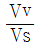
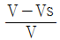
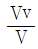
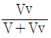
(정답률: 74%)
75. 기초 지반의 지지력과 예상 침하량을 추정 하기 위해 현장에서 실시하는 시험법은?
- CBR시험
- 평판재하시험
- 패커시헙
- 베인전단시험
(정답률: 84%)
76. 테르자기의 압밀이론 가정에 대한 설명으로 틀린 것은?
- 공극비와 압력과의 관계는 직선적이다.
- 토층의 압축은 2축으로 일어난다.
- 흙은 균질하고 흙속의 공극은 물로 완전 포화되어 있다
- 흙의 성질은 압력의 크기에 관계없이 일정하다.
(정답률: 알수없음)
77. 연질 암석은 주변의 환경변화에 의해 건조와 습윤이 반복될 경우 급격히 고결력을 잃어 조직이 파괴되는 경우가 있는데, 이와 같은 정도를 측정하기 위한 실내시험 방법으로 적당한 것은?
- 흡수 팽창 시험
- 팽윤압시험
- 동결융해시험
- Slaking시험
(정답률: 알수없음)
78. 다음의 지반개량 공법 중 고결의 원리를 이용한 것은?
- 샌드 드레인 공법
- 웰포인트 공법
- 팩 드레인 공법
- 약액주입 공법
(정답률: 알수없음)
79. 다음에서 설명하는 현상은?
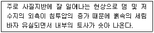
- 동상현상
- 연화현상
- 모세관현상
- 분사현상
(정답률: 알수없음)
80. 다음 중 바이브로 플로테이션공법의 특징과 가장 거리가 먼 것은?
- 느슨한 사질지반에 대한 물다짐, 진동 다짐의 효과를 지중에 이용한 공법이 다.
- 공사기간이 빠르고 공사비가 싸다.
- 진동 다짐에 의해 지반내의 지하수위에 영향을 미친다.
- 개량할 수 있는 지반의 깊이는 통상 7~8cm정도이다.
(정답률: 알수없음)
5과목: 광상학
81. 그라이젠화 작용과 가장 관계가 깊은 것은?
- 화강암
- 사암
- 점판암
- 석회암
(정답률: 60%)
82. 다음 중 금속광석광물의 가장 일반적인 산출 형태는?
- 규산염광물
- 인산염광물
- 탄산염광물
- 황화광물
(정답률: 60%)
83. 열수광상 중 가장 높은 온도와 압력하에서 생성된 것으로 스카른 광물을 수반하는 유형은?
- 심열수광상
- 중열수광상
- 천열수광상
- 제노서말광상
(정답률: 67%)
84. 우리나라의 광상 중에서 대부분의 동광상을 어느 광화대에 주로 분포하고 있는가?
- 황강리 광화대
- 태백산지구 광화대
- 설천 광화대
- 함안-군복 광화대
(정답률: 알수없음)
85. 다음중 증발광상의 대표적 광물에 포함 되지 않는것은?
- 석리염(sylvite)
- 카날라이트(carnallite)
- 반토화이트(vanthoffite)
- 오튜나이트(autunite)
(정답률: 70%)
86. 기성광상에서의 모암의 변질작용에 속하는 것은?
- 불석화작용(zeolitization)
- 견운모화작용(sericitization)
- 주석화작용(scaplitization)
- 프로필라이트화작용(propylitization)
(정답률: 60%)
87. 광화가스(maineralizer)는 어떤 광물을 정출하는데 필요한 성분인가?
- 고온성 광물의 정출에 필요한 휘발성분
- 저온성 광물의 정출에 필요한 휘발성분
- 저온성 광물의 정출에 필요한 비휘발성 성분
- 고온성 광물의 정출에 필요한 비휘발성 성분
(정답률: 46%)
88. 유리 및 광학레즈 제조용, 표백제, 합금 및기타 화학약품의 원료로 사용되고 있 는 Ba 의 주요 원료광물은?
- 독중석(witherite)
- 금록석(chrysobery)
- 녹주석(bery)
- 지르콘(zircon)
(정답률: 36%)
89. 석회암을 모암으로 하는 스카른 광상에서 흔히 산출되는 스카른 광물이 아닌 것은?
- 투휘석
- 녹염석
- 석류석
- 엽납석
(정답률: 37%)
90. 배호분지(back arc basin)에 가장 일반 적으로 형성되는 광상은?
- 마그마기원 크롬 철석 광상
- 망간단괴광상
- 접촉교대광상
- 화산성 괴상황화물광상
(정답률: 알수없음)
91. 다음 광물중에서 내화벽돌의 원료 광물로서 가장 적절한 것은?
- 활석
- 형석.
- 납석
- 방해석
(정답률: 알수없음)
92. 마그마 동화작용(Assimilation)의 설명으로 맞는 것은?
- 자체에서 일어나는 현상이며 외부에서 어떤 물질의 공급이 없다.
- 기존 암석을 용융하여 처음과는 전혀 다르거나 다소 상이한 마그마를 형성한다.
- 마그마의 온도가 내려가면 각종 광물은 정출된다.
- 광물이 정출되어 잔액과 분리되는 작용이다.
(정답률: 37%)
93. 한국의 지층중 석회석 광상의 주요대상 지층은?
- 원남층
- 풍촌층
- 장성층
- 성주리층
(정답률: 알수없음)
94. 우리나라에서는 무연탄이 주로 생산되는데 주로 나오는 2개의 지층은 다음의 어느 지층인가?
- 연천계와 평안계지층
- 평안계와 대동계지층
- 조선계와 평안계지층
- 조선계와 경상계지층
(정답률: 알수없음)
95. 두 개의 광맥의 동일한 주향을 가지며, 서로 수직으로 교차하여 이루는 광맥을 무엇이라 하는가?
- 단성맥(simple vein)
- 복성맥(complex vein)
- 콘주게이트(conjugate)
- 파이프(pipe)
(정답률: 70%)
96. 갈탄이 무연탄으로 변화되는 과정에 수반되는 변화로서 틀린 것은?
- 수분의 감소
- 고정탄소의 증가
- 비중의 증가
- 휘발성분의 증가
(정답률: 77%)
97. 다음 중 원유를 가장 많이 생산하고 있는 트랩은?
- 돔형 트랩
- 단층형 트랩
- 배사형 트랩
- 부정합형 트랩
(정답률: 65%)
98. 철광상 중에서 가장 큰 규모를 이루는 광상의 유형은 어느 것인가?
- 열수광상
- 접촉광상
- 퇴적광상
- 정마그마광상
(정답률: 알수없음)
99. 다음은 가상(pseudomorph)에서 각 광물의 변질 관계를 나타낸 것이다. 서로 맞지 않는 것은?
- 황철석 → 침철석
- 이극석 → 방연석
- 적동석 → 공작석
- 형석 → 방해석
(정답률: 알수없음)
100. 함금석영맥이 지표에 노출되어 적갈색으로 된 것은 무엇인가?
- 곳산(gossan)
- 보난자(bonanza)
- 키이스라겔(kieslager)
- 유개암(cap rock)
(정답률: 67%)